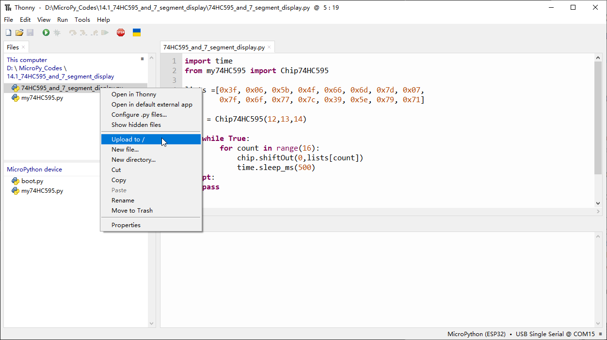

Chapter 14 74HC595 & 7-Segment Display
In this chapter, we will introduce the 7-Segment Display.
Project 14.1 7-Segment Display.
We will use 74HC595 to control 7-segment display and make it display hexadecimal character “0-F”.
Component List
Raspberry Pi Pico W x1
830 Tie-Points Breadboard x1
74HC595 x1
Resistor 220Ω x8
1 Dight 7-segment Display x1
Jumper Wire
Connect

Code
In this section, the 74HC595 is used in the same way as in the previous section, but with different values transferred. We can learn how to master the digital d isplay by sending the code value of “0” - “F”. Move the program folder “Super_St arter_Kit_for_ESP32_S3/Python/Python_Codes” to disk(D) in advance with the path of “D:/Micropython_Codes”.
Open “Thonny”, click “This computer” >> “D:” >> “Micropython_Codes” >> “14.1_74HC59 5_and_7_segment_display”.
Select “my74HC595.py”, right click your mouse to select “Upload to /”, wait for “my74HC595.py” to be uploaded to ESP32-S3 and then double click“74HC595_and_7_se gment_display.py”.
14.1_74HC595_and_7_segment_display

Click “Run current script”，and you’ll see a 1-bit, 7-segment display displaying 0-f in a loop.
Code
The following is the program code:
import time
from my74HC595 import Chip74HC595
lists =[0x3f, 0x06, 0x5b, 0x4f, 0x66, 0x6d, 0x7d, 0x07,
0x7f, 0x6f, 0x77, 0x7c, 0x39, 0x5e, 0x79, 0x71]
chip = Chip74HC595(12,13,14)
try:
while True:
for count in range(16):
chip.shiftOut(0,lists[count])
time.sleep_ms(500)
except:
pass